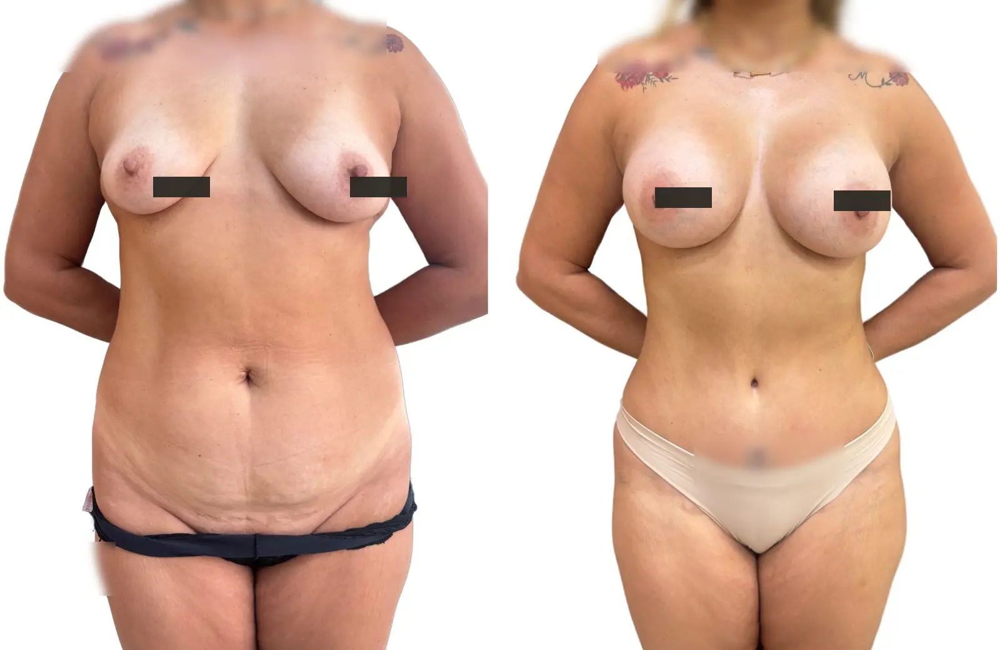
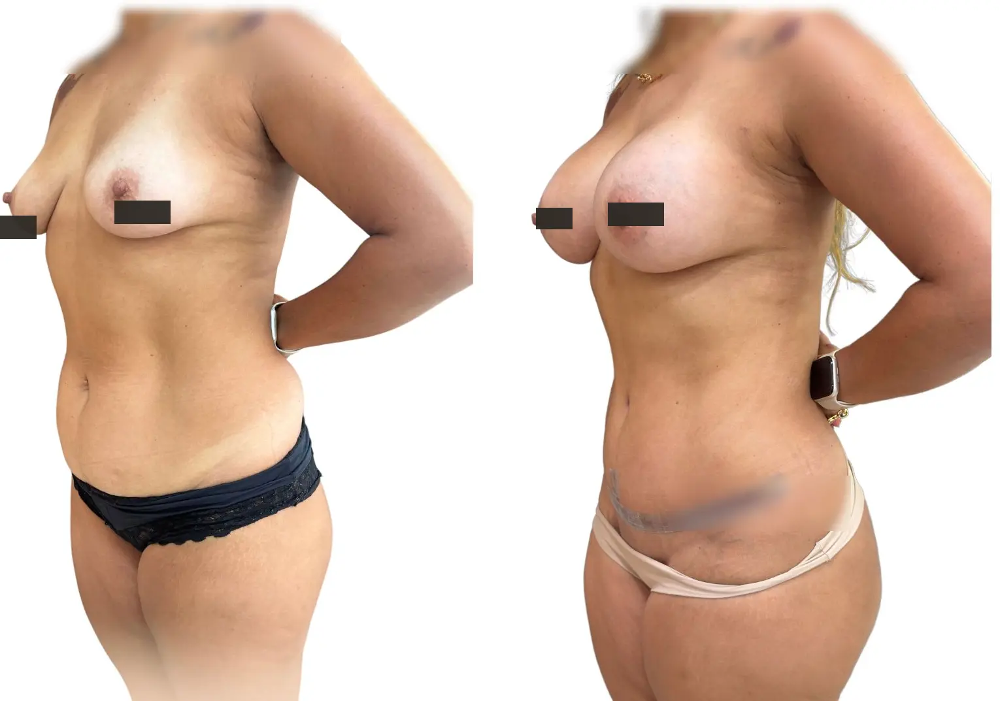

Gordura localizada
Lipoaspiração pode ser indicada quando há depósitos localizados e pele adequada.
Lipoaspiração, abdominoplastia, braquioplastia e cirurgias pós-bariátricas são avaliadas conforme excesso de gordura, pele, cicatrizes possíveis e objetivo de contorno.
Atendimento na Clínica LIV Faria Lima, em Pinheiros. Consulta presencial e teleconsulta em casos selecionados.

Nem toda queixa é resolvida apenas com lipoaspiração. Em alguns casos o principal problema é flacidez, excesso de pele, diástase ou a necessidade de tratar mais de uma região com uma estratégia segura.
Lipoaspiração pode ser indicada quando há depósitos localizados e pele adequada.
Abdominoplastia, braquioplastia e pós-bariátrica tratam flacidez e sobra cutânea.
Nem toda queixa de contorno exige a mesma técnica ou associação.
Quando o procedimento não é o melhor caminho, a consulta também serve para explicar alternativas, limites e o momento mais adequado para intervir.
O ponto decisivo é entender se a queixa vem de gordura localizada, flacidez, excesso de pele ou uma combinação.
Refina contorno quando há gordura localizada e pele com boa capacidade de retração.
Ver lipoaspiraçãoTrata excesso de pele, flacidez e, quando indicado, diástase abdominal.
Ver abdominoplastiaOrganiza por etapas o tratamento de excesso de pele após grande perda de peso.
Ver pós-bariátrica
Na consulta são avaliadas as áreas de incômodo, a elasticidade da pele, a presença de excesso cutâneo, cicatrizes possíveis, recuperação e a combinação de procedimentos que pode fazer sentido com segurança.
Entender incômodo, rotina, objetivos e expectativas.
Avaliar anatomia, pele, cicatrizes possíveis e proporções.
Discutir técnica, alternativas, limites e associações.
Orientar exames, preparo, recuperação e orçamento.
Procedimentos cirúrgicos exigem avaliação de saúde, exames e preparo adequado. Para cirurgias realizadas pela clínica, a avaliação cardiológica pré-operatória pode integrar o protocolo de segurança da LIV.
As fotos ajudam a ilustrar planejamento e cicatrização, mas cada resultado depende de anatomia, técnica, recuperação e cuidados pós-operatórios.

Imagem educativa de contorno corporal. Resultado varia conforme anatomia e cicatrização.

Imagem autorizada com finalidade educativa, sem promessa de resultado.
Imagens autorizadas e tratadas para privacidade. Não representam garantia de resultado individual.
Algumas queixas pedem associação ou uma estratégia diferente. A consulta ajuda a definir o melhor caminho.
Não. Lipoaspiração é uma das possibilidades. Contorno corporal pode envolver lipo, abdominoplastia, braquioplastia ou cirurgias para excesso de pele.
A avaliação considera gordura localizada, elasticidade da pele, flacidez e cicatrizes possíveis. Essa diferença muda completamente a indicação.
Às vezes sim, mas a segurança define limites de tempo cirúrgico, extensão, exames e recuperação.
Não é o objetivo. O foco é remodelar proporções e tratar excessos específicos após avaliação individual.
Sim. Geralmente exige organização por etapas, avaliação nutricional, exames e definição de prioridades.
Rua Pais Leme, 215 · Conj. 710 · Pinheiros · São Paulo. Teleconsultas em casos selecionados, especialmente para orientação inicial ou pacientes de fora de São Paulo.
Ao enviar uma mensagem, a equipe entende sua queixa principal, orienta sobre o formato da consulta e informa os próximos passos com discrição. A avaliação pode ser presencial em Pinheiros ou, em casos selecionados, por teleconsulta inicial. O atendimento é particular; a equipe informa valores da consulta, disponibilidade, nota fiscal e próximos passos.
Você informa o que deseja avaliar e há quanto tempo isso incomoda.
A equipe explica consulta, agenda, valores e emissão de nota fiscal.
Na consulta, a Dra. Amanda define indicação, limites, segurança e próximos passos.
Envie uma mensagem para contar sua queixa principal e receber orientação sobre consulta presencial em Pinheiros ou teleconsulta inicial em casos selecionados.